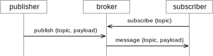
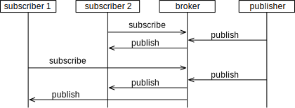
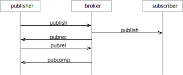
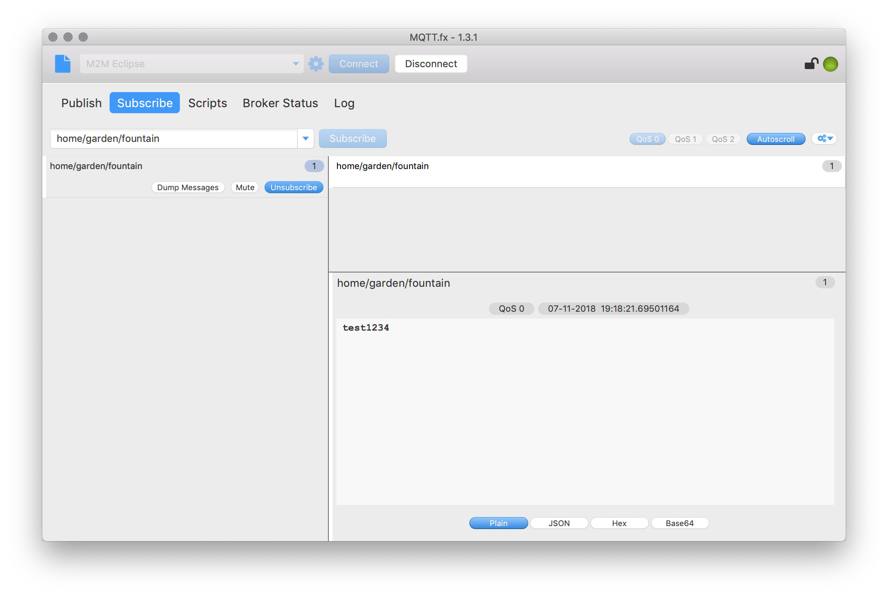

MQTT
This week, you will learn how to communicate by using a protocol that is called MQTT. Like HTTP, it is usually executed on top of TCP/IP, but you will notice that this protocol is very different from HTTP, in many respects. That’s one of the reasons why we look at it. Once you have understood HTTP and MQTT, you have covered a lot of mechanisms, properties, patterns and architectures that are used in communication protocols.
Learning Goals
Goals: After this week, you will be able to:
- Run and operate your own MQTT broker.
- Create an MQTT client in Python.
- Publish and receive messages, including data payload.
- Select proper quality-of-service levels.
- Design MQTT topics for applications.
MQTT
MQTT is often used in situations where events should be sent from many sensors and broadcast to several applications. IBM and others for instance use MQTT so that IoT devices can send updates into their cloud. When Facebook introduced their standalone Messenger application, they also relied on MQTT to push messages to the clients.[^1]
MQTT is pretty easy to work with, and the following are my personal top 5 reasons why using MQTT is interesting:
- MQTT is simple to debug. You can have extra clients during development that observe all communication. You can also manually send messages. This makes debugging much easier.
- You only need handle one IP address. That is the address of the broker. All other addressing happens indirectly via topics.
- Application startup is simple. You have to start the MQTT broker first, but clients can then connect in any order. The MQTT broker can also be hosted on a server and be always-on.
- MQTT works also behind a NAT. This means you can push a message from any location to a computer that is connected to your router at home. Only the broker needs to be accessible.
- MQTT is bi-directional by default. Any client can send messages to any other client, at any time. You are not restricted to a client-server structure where only the client can initiate interactions.
Broker Architecture
MQTT is a protocol that is based on the client-broker topology. As a repetition, remember first the client-server architecture, as we have it for instance in HTTP:
Client-server:
the client only after the client makes initial contact. Since only the client knows the address of the server initially, it is only the clients that can make the first contact and take initiative. In the world wide web, servers can host web sites and are contacted by browsers (the clients.) This is an example where there are many clients and only few servers, and where servers are optimized to server many clients. But there are also protocols in which the server is on a tiny sensor device, and “serves” the values of the sensor to any client that is interested in them.
Example: Assume again a home automation system, in which a controller adjusts the heater (on/off) based on the temperature reported by several sensors that are distributed in the room. With HTTP, the two communication parts were client and servers, and the client can send data to the server or request data via the request-response pattern. We have hence two possibilities, depending on how we assign the roles of client and server:
HTTP, sensors act as clients: The sensors are HTTP clients and repeatedly send their temperature measurements to the heater, which is acts as a HTTP server.
HTTP, sensors act as servers: Vice-versa, we can think of a solution where each temperature sensor is a HTTP server, and the heater acts as a client. The heater makes requests to each sensor and asks for the current temperature, and then adjusts the heater based on all of the responses.
Assume now that not only the heater module is interested in the temperature, but also the controller for the window blinds. (If it gets very warm during the summer, it could move down the blinds to keep the sun down.) With the above solutions, how would that look like?
If the sensors should be the clients, then we now have to update all the sensor logic so that they not only send their measurements to the heater, but also the blind controller. Even worse, since all transmission cost energy, we roughly doubled the energy consumption of the sensor nodes, since the communication doubled. This makes that the batteries only last half as long!
If the sensors act as HTTP servers and we introduce the blind controller, they don’t have to change their code. They just answer now double as many requests; the ones from the heater and the ones from the blind controller. For the battery life this is equally bad as the solution above.
The problem with the above scenario is that we used a direct communication between the sensors and the control units, as shown in the figure below. Each sensor (in red) is connected to each controller.
Now imagine a system where the components are more separate form each other, and do not communicate directly with each other. We can achieve this by introducing a component that decouples the sensors and the controllers. We call that component a broker, shown in the figure below:
Client-broker:
broker usually does not care about the specific application or the content of the message. Clients communicate with the server and send messages to the broker, which then get distributed to those clients that are interested in the events.
MQTT Brokers
The broker is a generic component, which means that it is not specific for any application and that you can use the same broker for many different applications. You hence don’t need to write your own broker, but can use an existing one and just configure it. There are several MQTT brokers available. The one we are going to use is called Mosquitto.
Message Patterns: Publish-Subscribe
MQTT uses a publish-subscribe message pattern.
The publish part is very simple: Whenever a client (here a sensor) makes some obervation, it sends a message to the broker. We also say that the client publishes a message, or that the client acts as a publisher.
The subscribe part works as follows: Clients that are interested in a certain information subscribe to the broker. Whenever another client publishes that information, the broker forwards this message to all clients that have subscribed.
A minimal interaction looks as follows:

In MQTT, clients can be publishers or subscribers, or both. There can be any number of subscribers and any number of publishers in a system. Because of the publish-subscribe pattern, the subscribers do not have to know about the publishers, and the publishers do not have to know of the subscribers. They only have to know the address of the MQTT broker and connect to it.
For our home automation system, this enables an elegant and efficient solution: The sensors at as publishing clients that send their measurements to the broker. The controllers act as subscriber clients that subscribe to the broker for temperature updates. Once the broker receives the temperature updates, it forwards them to the controllers. When adding a new controller, it can just be a new subscriber that subscribes to the broker, but the communication and the behavior of the sensors does not change. Also, each sensor sends every measurement only once (to the broker), which helps to save energy.
Below you seen an example with two subscribers. Only subscriber 2 receives the first published message. Subscriber 1 only receives it after it also subscribes.

#Topics
Topics are used to define which information a subscriber is interested in, and match it with the information publishers provide. Usually, subscribers are not interested in all messages that all publishers send. Subscribers therefore only subscribe to specific topics, which depend on the application. The topics are organized in a hierarchy, separated by a dash (“/”). The following is an example for topics that an application for home automation can use:
house/garage/lights/l1
house/garage/lights/l2
house/garage/sensors/pi1
house/garage/doors/d1
The light l1 for instance subscribes to the topic house/garage/lights/l1 so that it can receive messages that switch it on or off. The passive infrared sensor pi1 publishes messages to the topic house/garage/sensors/pi1 every time it detects a movement.
Topics can include wildcards, which make it possible for a subscriber to subscribe to several topics with a single pattern:
- The “+” is used as a wildcard for a single level
- The “#” is used as a wildcard for several levels. It must only be placed at the end of a topic pattern.
Examples:
- To receive all messages sent within the house, a subscriber can subscribe to
house/#
- To receive all messages for lights in any zone (garage or kitchen), a subscriber can subscribe to
house/+/lights/+
Exercise: A publisher sends a message to the topic a/b/c/d. Which of the following 15 subscription topics will receive this message?
|
|
Subscription Topic
|
|
1
|
#
|
|
2
|
+/+/+
|
|
3
|
+/+/+/+
|
|
4
|
+/b/c/#
|
|
5
|
+/b/c/d
|
|
6
|
a/#
|
|
7
|
a/+/+/d
|
|
8
|
a/+/c/d
|
|
9
|
a/b/#
|
|
10
|
a/b/c
|
|
11
|
a/b/c/#
|
|
12
|
a/b/c/d/#
|
|
13
|
a/b/c/d
|
|
14
|
b/+/c/d
|
|
15
|
a/b/c/d/+
|
Example
An application to switch on the lights whenever a movement is detected can work like this: (In pseudo code)
subscribe to house/garage/sensors/pi1
whenever an MQTT messages arrives at house/garage/sensors/pi1:
send a message
to house/garage/lights/l1 with payload "on"
after some time, send a message
to house/garage/lights/l1 with payload "off"
Quality of Service
Messages can be sent with three different quality-of-service (QoS) flags, which determine how much effort the broker and the clients spend on sending them:
QoS=0 is also called At most once. The message can get lost, and there will be no attempts to resend it.
QoS=1 is also called At least once. This means that the message will be eventually received, but that several copies of the message may appear due to duplication. The receiver has to detect any such duplicates.
QoS=2 is also called Exactly once. This guarantees the delivery and avoids any duplication.
You may ask: If QoS=2 is available, why would one ever use any of the lower QoS levels?
The answer is that the highest quality of service is also more expensive with regards to transmission effort. To send a single QoS=2 message, several messages on the underlying channel are necessary. Therefore, an application should always choose the lowest QoS level it can work with.
Below you see the diagrams that show how many control packages are involved to just send a single MQTT message, using QoS = 0.
For QoS=2, the protocol uses more control messages to transport a single MQTT message. This shows that there are more control messages involved the higher the QoS level is. This also means that it is more expensive for the network to transport MQTT messages with higher QoS level, as it uses more resources.

MQTT Clients in Python
There are libraries to use MQTT in a variety of programming languages. For Python, there is a library for an MQTT client called Paho. As usual, you install it via pip, using pip install paho-mqtt
MQTT Subscriber Client
The code for a client that subscribes to a topic looks like this:
import paho.mqtt.client as mqtt
client.connect('iot.eclipse.org', 1883, 60)
The code above is in its structure similar to the one we used when creating our own HTTP server. Here, we connect to a public MQTT broker of the Eclipse IoT project. The default port is 1883. The argument 60 denotes the number of seconds of maximum silence. If no message is sent within this time, the client sends automatically a ping message, so that the broker still knows that the client is alive.
The subscription happens in the callback function on_connect(). This has the benefit that the client will subscribe whenever it connects successfully. Paho has a built-in reconnection function, i.e., when the client disconnects it tries to connect again. When the subscription happens in the connect function, the subscription is also restored.[^2]
MQTT Publisher Client
The following code is used to publish a message:
client.publish(topic, payload=None, qos=0, retain=False)
Debugging With MQTT.Fx

MQTT.FX[^3] is a tool useful during development. Using MQTT.FX is really simple, but because we have now talked about brokers, clients, publishers and subscribers, you may loose track and wonder what this MQTT.FX does: Think of it as a debugger for MQTT, and you can use it like Wireshark. Once the system is done, you don’t need MQTT.FX anymore.
Essentially, MQTT.FX is a MQTT client, and can as such connect to an MQTT broker, subscribe to topics and send messages to topics. This does not sound like much. However, MQTT.FX has a generic user interface, you can use MQTT.FX while you construct your application to see how the other system components publish messages, and you can also "inject" messages into the system, by publishing to any topic you want.
Publishing Messages
Imagine you have created a MQTT client that runs a certain action when it receives a message, but you are not doen with the component that should send the message. To test at least the component that should receive the message, you can use MQTT.FX to publish a message with that content to the topic, and the component under test will behave as if the message was sent in the final system.
Observing Communication
Because MQTT uses the publish-subscribe pattern, it can simply subscribe to any topics that are interesting in your application and you can see which messages are sent to these topics, without disturbing the communication in the system. To achieve the same in HTTP, for instance, you need a tool like Wireshark.